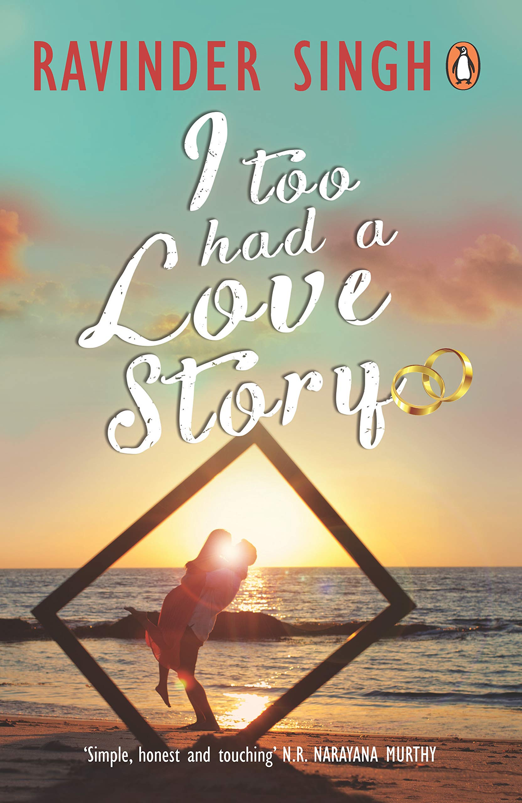

BOOKS
1- Wings of Fire: An Autobiography of Abdul Kalam

The book Wings of Fire, the autobiography of A P J Abdul Kalam constitutes an extraordinary reading for
all ages. There is something that everybody can extract from this book. In this book, the authors tell
us the story of a young Muslim boy who has big dreams about his future and what inspires him to become
an eminent scientist. This real story tells us the role of family, relatives and friends in helping a
person in achieving his goals. Apart from the very indicative title, the chapters of the book are also
touching –orientation, creation, propitiation, and contemplation.
Click here to purchase
2-An Autobiography: The story of My Experiments with Truth
Mahatma Gandhi's Autobiography is one book which guides you as to what is right and wrong. Most
importantly, the author should have experienced all these. The original was in Gujarati, and was later
translated into English and other Indian languages. The book is in five parts, beginning with his birth,
up until the year 1921. In the last chapter he writes, "My life from this point onward has been so
public that there is hardly anything about it that people do not know..."
The introduction reads, "What I want to achieve - what I have been striving and pining to achieve these
thirty years - is self-realization, to see God face to face, to attain Moksha. I live and move and have
my being in pursuit of this goal.
Click here to purchase
3-I Too Had a Love Story

Not everyone in this world has the fate to cherish the fullest form of LOVE. Some are born just to
experience the abbreviation of it.
I too had a love story by Ravinder Singh is the real-life love story that seems to have struck a chord
in the hearts of the readers across the country, by making it a national bestseller. This book remained
in the best-seller's list in India even after 6 years of its publication. So, just thought of giving a
review about this book as it was one of the simple, pure and innocent love story I have come across so
far...
Click here
to purchase
4-India's Struggle for Independence
India’s struggle for Independence by Bipin Chandra is your go to book for an in-depth and detailed
overview on Indian independence movement . Indian freedom struggle is one of the most important parts of
its history. A lot has been written and said about it, but there still remains a gap. Rarely do we get
to hear accounts of the independence from the entire country and not just one region at one place. This
book fits in perfectly in this gap and also provides a narration on the impact this movement had on the
people. Bipin Chandra’s book is a well-documented history of India's freedom struggle against the
British rule. It is one of the most accurate books which have been painstakingly written after thorough
research based on legal and valid verbal and written sources.
Click here to purchase
5-The Accidental Prime Minister: The Making and Unmaking of Manmohan Singh
In 2004 Sanjaya Baru left a successful career as chief editor of the Financial Express to join Manmohan
Singh as his media adviser. Singh and Baru had been close and Baru, a great admirer of the technocrat
who had ushered in the 1991 reforms, saw this as an opportunity to help a man he admired lead India down
a new path. As Singh’s ‘eyes and ears’ and self-appointed ‘conscience-keeper’, Baru saw the
transformation of Manmohan Singh from technocrat to politician. In his account, he tells his story of
what it was like to ‘manage’ public opinion for Singh and how their relationship unraveled, while giving
us a riveting look at Indian politics as it happened behind the scenes. Capturing the heady early days
of UPA-1 to the high noon of the nuclear deal, The Accidental Prime Minister is one of the most
important and intimate accounts of the prime minister and UPA-1.
Click here to purchase